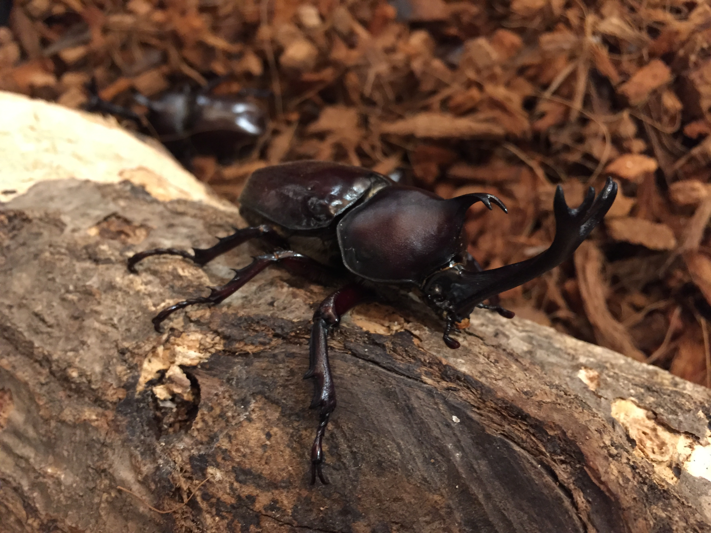

ご参加グループのご紹介
- 兜鬼オウガ
- imim
- 全力じじぃ
- カブトムシゆかり
- K☆DSJ
兜鬼オウガ
長野県戸隠村出身。

imim
川崎・横浜を中心に活動しており、川崎を制作踞尾店に構える。2012年10月に本格始動し、わずか半年で、初のワンマンライブで100人以上動員し大盛況を収める。
カブトムシ取り
お子様の喜ぶカブトムシとりです。

カブトムシゆかり
カブトムシゆかりさんの説明

Features
awesome
hello

イベント概要
日程
2019年8月12日 月曜日（祝日）場所
大田区民ホール アプリコ大ホール Capa 全1477席時間
開場：12:00 開園：13:00~14:30料金
・子供（4歳～12歳未満）：￥1000（税込み）・大人（中学生以上） ：￥1500（税込み）
内容
- 兜鬼オウガ（キャラクターショー）
- imim（デュオボーカルユニット）
- 全力じじぃ（お笑いイベント）
- カブトムシゆかり（タレント）
- K☆DSJ（キッズダンス）
国産カブトムシ
